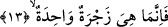
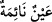

anlaşılmaktadır.
13. Bu dönüş sâdece bir seslenmeye bakar.
Bu son cümle, Allah’tan onların inkâr sözlerine karşı bir cevap ve mukadder bir fiilin
ta’lili mâhiyetindedir. O mukadder olan fiil şudur: Siz bu hayata yeniden dönüşü Allah
açısından zor zannetmeyin. Çünkü Allah Teâlâ’nın kudreti açısından çok kolay ve
basittir. O dönüş sâdece bir tek sayhadan ibarettir. Bir başka ifâdeyle bir tek sayha ile
meydana gelecektir. Onlar yerin kucağında yatarlarken bir tek sayhayla yeniden
dirilecekler ve ikinci bir sayha işitmeyeceklerdir. Bu sayhadan maksad sûra ikinci kez
üfürülüştür. Bu üfürülüş, insanların kafilenin kalkıp harekete geçmesi için kalk
borusunu bir kez çalmalarına benzer. Burada “dönüş” fiili, “zecra/sayha” kelimesiyle
ifâde olunmuştur. Böylece dönüşün -sanki sayha ile bir imişçesine- sayhaya ne kadar
bitişik olduğuna dikkat çekmek içindir. Zecra kelimesine “sayha” diye anlam verdik.
Çünkü bu kelime, “/o deveye bağırdı” tâbirinden türemedir.
14. Birdenbire kendilerini mahşerde buluverirler.
Yani onlar birdenbire kendilerini mahşerde bulma süpriziyle karşı karşıya gelip neye
uğradıklarını şaşırırlar. Bu son cümle insanların sayha kelimesiyle ifâde edilen hayata
geri döndürülüşün hemen ardından mahşere ne kadar hızla geleceklerinin beyânı
cümlesidir. Arapçada mufâcee için olan izâ edatı, onların inkâr ettikleri mahşere gelme
olayının hızla ve sürpriz bir biçimde meydana geleceğini ifâde etmektedir.
Âyetteki “es-sâhira” kelimesi düz, bembeyaz yeryüzü demektir. Düz ve beyaz
yeryüzüne “sâhira” denmesi, serabın bu gibi yerlerde akıp gidiyor gibi görülmesinden
dolayıdır. “Sahira” kelimesi, “ yâni “suyu akan göz” tâbirinden türemedir.
Bunun zıddı ise; “ yâni “uyuyan göz” ifâdesidir. Buna göre yeryüzünün beyazlığı
su, ot vb. şeylerden hâlî olmasından kaynaklanmaktadır. Şimdi burada yeryüzünde
serabın akması, suyun akmasına benzetilmiş ve ona “sahira” denmiş olmaktadır.
Derler ki yeryüzüne sâhira denmesi şundan kaynaklanmaktadır: Yeryüzünde yürüyen
kimse helâk olma korkusuyla uyumaz. Buna göre kelime yukardaki gibi “akma”
kökünden değil “uyumama” kökünden türemiş olmaktadır. Arapçada “sehira”
dendiğinde “gece uyumadı” anlamı kasdedilmektedir. Üçüncü ihtimal şudur: Sâhira,
Cehennem anlamındadır. Çünkü cehennemlikler orada uyumazlar.